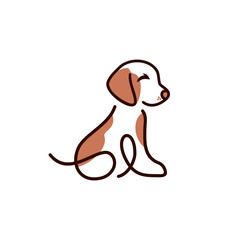

PetSwap
Home
Services
Contact
Join the Community:
1. Sign up and become a member of the PetSwap community.
2. Create your profile and add information about your dog(s) and your availability as a pet sitter.
3. Find Friends with Dogs: Browse through profiles of other members in your area who are also dog owners. Connect with them to arrange playdates, walks, and other activities for your dogs to socialize and have fun. Become a Babysitter: Offer your services as a dog sitter to other members of the community. Specify your availability and the services you can provide, such as overnight stays, daily walks, or feeding.
4. Find a Babysitter for Your Dog: When you need someone to look after your dog during vacation days or other times when you're away, use the PetSwap platform to find suitable babysitters in your area. Browse through available profiles, read reviews, and communicate with potential sitters to make arrangements.
5. Enjoy Peace of Mind: Leave your dog in the care of a trusted member of the PetSwap community while you're away, knowing that they'll receive the attention, care, and love they deserve. In return, reciprocate by babysitting other members' dogs when they need it.
Happy swapping!